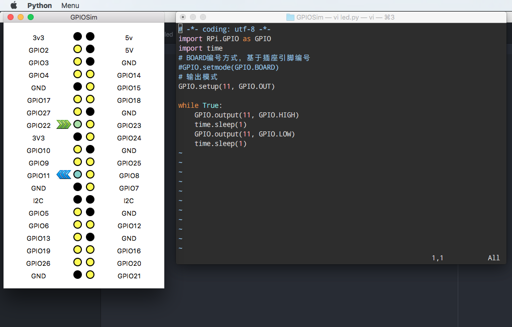

树莓派 GPIO 模拟器：GPIOSim
GPIOSim 是一个树莓派 GPIO 模拟器，目前支持 Linux 和 OS X。它能够在 PC 上进行开发调试使用 RPi.GPIO 模块编写的树莓派应用。
这是一个开源项目：
- Github：bobvann/GPIOSim: Raspberry Pi GPIO simulator
- 博客主页：GPIOSim: Raspberry Pi GPIO Simulator for Linux / OS X - Bob Vann
在 OS X 上安装使用
运行环境：OS X 10.11.5，Python 3.5 运行效果：
安装
- 安装 Python 3.x，可使用 Homebrew 工具安装。
- 安装 Pillow，(Python 2.x 上叫 PIL)：$ pip3.5 install Pillow。
- 安装 configparser
- git clone 源码并进入目录，执行 $ python3.5 GPIOSim.py，即可运行 GUI。
示例
# -*- coding: utf-8 -*- import RPi.GPIO as GPIO import time # BOARD编号方式，基于插座引脚编号 #GPIO.setmode(GPIO.BOARD) # 输出模式 GPIO.setup(11, GPIO.OUT) for i in range(0, 10): GPIO.output(11, GPIO.HIGH) time.sleep(1) GPIO.output(11, GPIO.LOW) time.sleep(1) #GPIO.cleanup()
可以看到上面的代码有两行被注释的代码，因为这是一个小项目，没有模拟实现完整的 RPi.GPIO 模块。
comments powered by Disqus